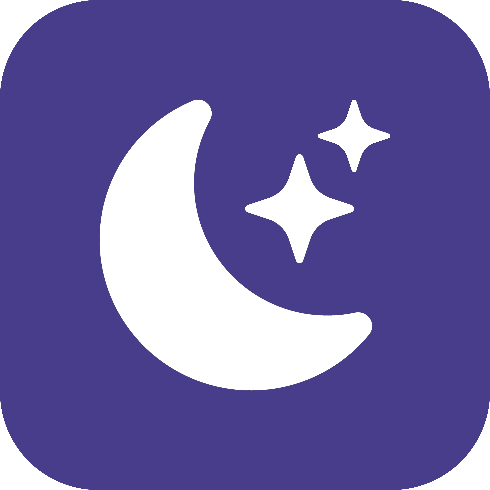

テーマは JSON
CSS は不要。書いたら即反映され、壊れた箇所だけ無視される。5環境で見た目の差なく適用される。

Gumicordサードパーティ製 Discord クライアント
テーマとプラグインで、自分好みの Discord を。Windows・macOS・Linux・Android・iOS の5環境で同じ見た目・同じ挙動を目指す、自前レンダラのクライアント。
警告：サードパーティ製クライアントでの接続は Discord の利用規約に反し、アカウントを失う可能性があります。
CSS は不要。書いたら即反映され、壊れた箇所だけ無視される。5環境で見た目の差なく適用される。
画面部品を安定 ID で指名して変形を登録。隔離実行と承認制で、暴走しても本体は止まらない。
Rust + wgpu の自前レンダラ。Electron より小さい常駐・速い起動を目標に、計測駆動で開発している。
インライン変換で打って送信。各環境の標準入力経路を使う。
使える道具は宣言した能力だけ。初見は承認窓が出て、許可するまで動かない。
MIT ライセンス。仕様書を正本とする仕様駆動開発で作っている。
{
"manifest": { "id": "dev.example.mytheme",
"name": "My theme",
"version": "1.0.0", "abi": 1 },
"tokens": {
"color.bg.base": "#101018",
"color.text.primary": "#f0f0f5"
},
"rules": [
{ "select": "app.window",
"style": { "background": "$color.bg.base" } },
{ "select": "chat.message.content",
"style": { "color": "$color.text.primary" } }
]
}import { log, ui } from "@gumicord/sdk";
log.info("hello plugin loaded");
ui.patch("chat.message.header.author", (node) =>
ui.after(node, ui.badge({ text: "hi" })),
);開発版のナイトリーリリースを配布中。Windows（exe）・macOS（dmg）・Linux（AppImage）・Android（APK）・iOS（未署名 IPA）が入っている。
ログインは QR コードを携帯の Discord アプリで読む方式。初回起動時は案内に従うこと。
サードパーティ製クライアントの利用は自己責任です。
テーマ・プラグイン作者向けリファレンス（日英）。
本体・ドキュメント・ナイトリー配布のリポジトリ。